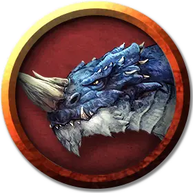

Синий сторожевой дрейк
Blue Guard Drake
Средний Дракон, без мировоззрения

Класс Доспеха 14 (природный доспех)
Хиты 52 (7к8 + 21)
Скорость 30 футов, копая 20 футов
| мод | спас | ||
|---|---|---|---|
| СИЛ | 16 | +3 | +3 |
| ЛОВ | 11 | +0 | +0 |
| ТЕЛ | 16 | +3 | +3 |
| мод | спас | ||
|---|---|---|---|
| ИНТ | 4 | −3 | −3 |
| МДР | 10 | +0 | +0 |
| ХАР | 7 | −2 | −2 |
Навыки Восприятие +2
Сопротивление урону электричество
Чувства тёмное зрение 60 футов, пассивное Восприятие 12
Языки понимает Драконий, но не может говорить.
Опасность 2 (450 опыта)
Бонус мастерства +2
Среда обитания Город, Арктика
Действия
Мультиатака. Дрейк совершает две атаки: одну укусом и одну хвостом.
Укус. . Рукопашная атака оружием: +5 к попаданию, досягаемость 5 футов, одна цель. Попадание: 7 (1к8+3) колющего урона.
Хвост. . Рукопашная атака оружием: +5 к попаданию, досягаемость 5 футов, одна цель. Попадание: 6 (1к6+3) дробящего урона.
Описание
Сторожевой дрейк это рептилия созданная из чешуи дракона с помощью странного и жуткого ритуала. После должного обучения дрейк становится послушным, верным и отличным сторожевым зверем, который может выполнять простые команды.
Дары драконов. Ритуал, для создания сторожевых дрейков был изначально разработан культом Тиамат, но получил свое распространение и среди других групп достаточно сведущих в магии и связанных с драконами. Помощь дракона необходима для успешного проведения ритуала и дракон, как правило, предоставляет свою помощь в качестве награды своим союзникам или почитателям.
Ритуал длится несколько дней и для него требуется 10 фунтов свежих чешуек дракона (подаренных драконом), большое количество свежего мяса и железный котел. Когда процесс завершен, яйцо размером с полурослика появляется из котла и вылупляется в течение нескольких часов.
Стремящийся к обучению. Только что вылупившиеся сторожевые дрейки запоминают первое существо которое его кормит (как правило тот кто будет его обучать), создавая агрессивные но доверительные отношения с ним. Сторожевые дрейки полностью вырастают в течении двух–трех недель и могут быть обучены за этот срок. Они могут быть обучены точно тому же, что и сторожевые собаки.
Сторожевой дрейк напоминает дракона из чешуи которого был создан, но бескрылый, более приземистый и мускулистый. Дрейки не могут размножаться и их чешуя не может быть использована для изготовления новых сторожевых дрейков.